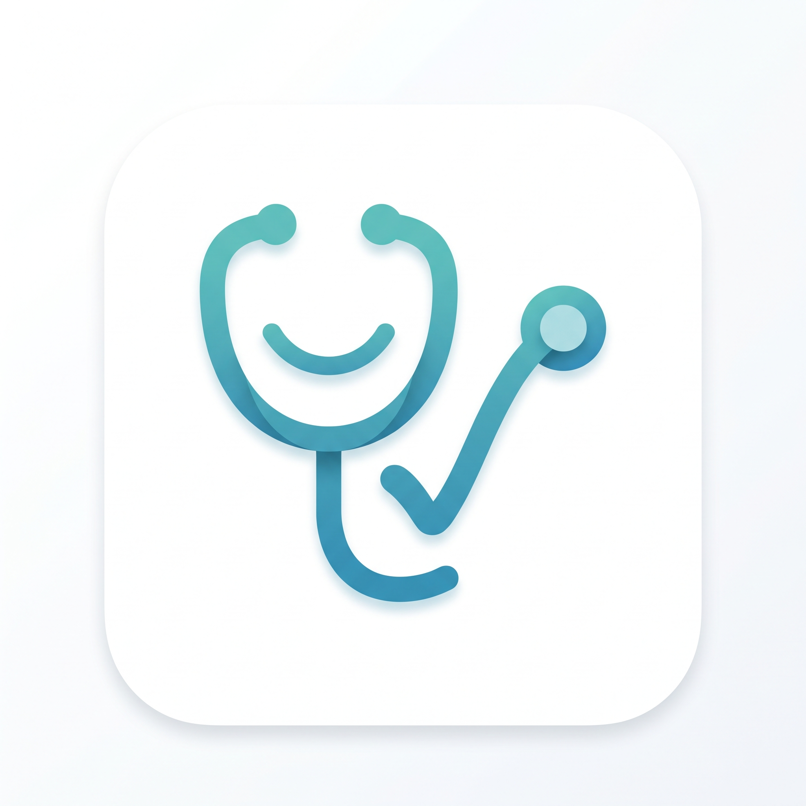

طبيبي د. | Mon Médecin Dr.
النظام الرقمي لإدارة العيادات الطبية ومتابعة الصف
دخول العيادة الرقمية 🩺
💡 نصيحة: للحصول على التطبيق على هاتفك، اضغط على النقاط الثلاث في المتصفح واختر
"الإضافة إلى الشاشة الرئيسية"
قبل الدخول.